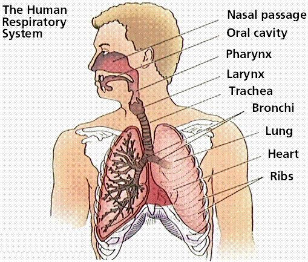
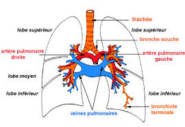

L'appareil respiratoire


Le nez a differentes fonctions :
- Humidification de l'air par la secretion des muqueuses, le mucus.
- Filtration de l'air par les cils.
- Rechauffement de l'air par les capillaires.
Le pharynx
Le pharynx est un conduit faisant communiquer la bouche et l'œsophage d'une part, les fosses nasales et le larynx d'autre part.
C'est donc le carrefour des voies aeriennes et des voies digestives qui se croisent a ce niveau.
3 parties :
- Rhino-pharynx.
- Oro-pharynx.
- Laryngo-pharynx.
Le larynx
Le larynx est l'organe essentiel de la phonation, c'est a dire de la parole.
Le larynx presente :
- Le cartilage thyroedien.
- L'epiglotte.
- La glotte.
L'epiglotte est situee au-dessus du larynx, elle separe le pharynx du larynx pour eviter les fausses routes.
La trachee
La trachee est un cartilage cylindrique qui fait suite au larynx et donne naissance aux bronches, elle est recouverte d'une muqueuse epitheliale possedant des cils permettant de filtrer l'air.
Les bronches Composition de l'arbre bronchique
- Trachee.
- Bronche droite / Bronche gauche.
- Bronche lobaire.
- Bronche segmentaire.
- Bronchiole.
- Alveole pulmonaire.

Les poumons
Les poumons sont separes par le mediastin dans la cage thoracique.
Le sommet du poumon est l'apex.
3 faces :
- Gril costal.
- Face mediastinale.
- Face diaphragmatique.
- Feuillet visceral : recouvre le poumon.
- Feuillet parietal : en contact avec la cavite thoracique.
L'alveole pulmonaire
L'alveole est un sac qui se gonfle et se degonfle.
Autour, un reseau de capillaire permet des echanges gazeux.
A l'interieur, un liquide permet qu'elle ne se collabe pas, c'est le surfactant.

La plevre
La plevre est une couche membraneuse qui recouvre les poumons.
Elle est constituee de 2 feuillets :
Entre ces deux feuillets, une cavite virtuelle permet le glissement des feuillets.
Voir aussi :